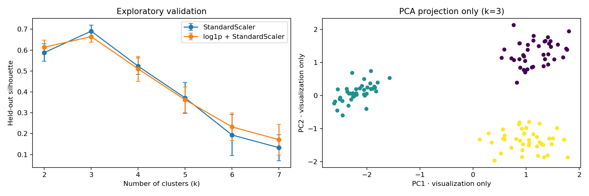

Decision surface / CRISP-DM deployment view
Find the shape of your customer base.
A compact readout of a deterministic K-Means experiment. Explore the profiles, inspect the evidence, and keep the boundary between a teaching dataset and a business decision visible.
What the model found
Three profiles, one useful starting point.
Evidence, not vibes
Cluster selection and customer map
Silhouette is the selection signal. CH and DB provide additional context; none of these metrics prove business value.
Improved preprocessing
log1p income + order value → StandardScaler
| k | Silhouette | CH | DB |
|---|---|---|---|
| Loading scores… | |||
Segmentation artifact
Selection curve + PCA projection exported by the Python run

Trace the work
CRISP-DM, made visible.
Use the phase navigator as a quick presentation guide for the experiment’s reasoning and boundaries.
Turn cluster output into a decision surface.
Identify actionable customer groups for differentiated offers while keeping the experiment’s assumptions explicit.
Run it yourself
Reproduce the evidence locally.
The dashboard reads the generated artifacts in this folder. Start the Python run when you want a fresh dataset and then serve this directory over HTTP.
python3 -m src.experimentpython3 -m pytest -qpython3 -m http.server 8000